International Journal of Theoretical and Applied Nanotechnology (IJTAN)
ISSN: 1929-1248

Volume 1, Issue 1, Year 2012 - Pages 21-29
DOI: 10.11159/ijtan.2012.004
Superionic Conductivity and Specific Effects Induced by γ-Radiation in Nanofibrous TlGaTe2 Crystals
Rauf Sardarly¹, Oktay Samedov¹, Nurana Aliyeva¹, Arzu Sardarli²
¹Rayiha Aqayeva, Turana Musazade
Institute of Radiation Problems, National Academy of Sciences of Azerbaijan
AZ1143, Azerbaijan Republic, Baku, B.Vaxabzade 9
sardarli@yahoo.com; o.samedov@rambler.ru; nur.elizade@rambler.ru; aqayevaraya@rambler.ru; m.t14@mail.ru
asardarli@fnuniv.ca
Abstract - Temperature dependences of electrical conductivity σ(T), switching effect, THz spectra and permittivity ε(T) of one-dimensional (1D) TlGaTe2 single crystals are investigated. The superionic conductivity observed at temperatures above 305 K is related to diffusion of Tl+ ions via vacancies in the thallium sublattice between 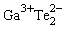 nanochains. A relaxation character of dielectric anomalies suggests the existence of electric charges weakly bound to the crystal lattice. Upon the transition to the superionic state, relaxors in the TlGaTe2 crystals are Tl+ dipoles ( ) nanochains) that arise due to melting of the thallium sublattice and hops of Tl+ ions from one localized state to another. The effect of a field-induced transition of the TlGaTe2 crystal to the superionic state is detected. The temperature dependences of σ(T) and current-voltage characteristics subjected to various doses of γ-radiation in both geometries of the experiment, along nanochains parallel to the tetragonal axis of the crystal σ) and perpendicular to these nanochains, are studied. It is shown that the dependence σ(T) measured in the ohmic region of the current-voltage characteristic is the shape typical of the hopping mechanism. The current-voltage characteristics in the region of a more abrupt increase in the current are also studied and explained in the context of the Pool-Frenkel thermal-field effect. It is shown that anisotropy of electrical conductivity changes under the effect of irradiation, which brings about translational ordering of nanochains. Terahertz time-domain spectroscopy reveals absorption lines at approximately 0.2 THz that may be attributed to the libration oscillations of the nanofibers in the superionic phase.
) nanochains) that arise due to melting of the thallium sublattice and hops of Tl+ ions from one localized state to another. The effect of a field-induced transition of the TlGaTe2 crystal to the superionic state is detected. The temperature dependences of σ(T) and current-voltage characteristics subjected to various doses of γ-radiation in both geometries of the experiment, along nanochains parallel to the tetragonal axis of the crystal σ) and perpendicular to these nanochains, are studied. It is shown that the dependence σ(T) measured in the ohmic region of the current-voltage characteristic is the shape typical of the hopping mechanism. The current-voltage characteristics in the region of a more abrupt increase in the current are also studied and explained in the context of the Pool-Frenkel thermal-field effect. It is shown that anisotropy of electrical conductivity changes under the effect of irradiation, which brings about translational ordering of nanochains. Terahertz time-domain spectroscopy reveals absorption lines at approximately 0.2 THz that may be attributed to the libration oscillations of the nanofibers in the superionic phase.
Keywords: Nanochains, Superionic conductivity, Relaxors, Hopping conductivity, Nanofibrous crystals, Varistor effect, Pool-Frenkel effect, γ-irradiation
© Copyright 2015 Authors This is an Open Access article published under the Creative Commons Attribution License terms. Unrestricted use, distribution, and reproduction in any medium are permitted, provided the original work is properly cited.
1. Introduction
Superionic conductors constitute a special class of substances that has recently attracted close attention of many researchers. Unusual properties of these sub stances are interesting for both solving fundamental problems of physics of condensed matter and physical chemistry and applications (Parfen'eva et al., 2003; Gurevich, 1982). An important feature of the superionic conductors is their anomalously high ionic conductivity, the order of magnitude of which is close to that typical of melts and concentrated solutions of strong electrolytic conductors. Consequently superionic conductors can be considered as substances with hybrid properties: the conductivity of a liquid melt or solution and the mechanical strength of a solid. Crystals with structural disorder hereinafter referred to as superionic crystals, can be found in two radically different phases: at temperatures below a critical temperature, they behave similarly to ordinary ionic crystals (dielectric phase); at temperatures above a critical temperature, they transfer to a special, superionic state (electrolytic phase).
The TlGaTe2 semiconductor compound crystallizes in the tetragonal space group and features a one-dimensional (1D) rodlike structure. The electrical properties of the TlGaTe2 compound were studied in Guseynov et al. (1967) and Guseynov et al (1970). The calculations of the energy band structure of TlGaTe2 showed that the top of the valence band is located at the high symmetry point T at the surface of the Brillouin zone, while the bottom of the conduction band is located at the line D (Godzhaev et al., 2004). The band gap obtained from performed calculations was found to be equal to 0.86 eV.
In Aldzhanov et al. (1985) and Aliev et al. (1987) it is reported about the second-order phase transition at a temperature of 98.5 K. Hanias (1993) studying detected the current–voltage (I-V) characteristics of a TlGaTe2 crystal, detected the effect of negative differential resistance and voltage oscillations in the region of negative differential resistance.
In this paper, we report experimental results on the dielectric and electrical properties of the TlGaTe2 compound at temperatures above 300 K. Our choice was determined by the suggestion that due to its crystalline structure TlGaTe2 compound could be considered as promising materials with superionic conductivity. The presence of a pseudogap in the density of states and the existence of ultimately anisotropic (1D) and rodlike structure in the crystals of this class make it possible to expect specific features in electrical conductivity; these features are related to the low-dimensional type of the structure. Within the presented work we also studied the specific features of anisotropy of electrical conductivity in the TlGaTe2 crystals (both in the linear and nonlinear regions of the I-V characteristics) and relation of this anisotropy to both the structural features of the crystal and radiation defects. We intended to analyze the conductivity of the crystal in terms of the Mott and Pool–Frenkel models (Mott, 1979 and Frenkel, 1975).
2. Experimental Results and Discussions
2. 1. Experimental Setup
The samples of the TlGaTe2 compound were synthesized by fusing the starting components (with purity no lower than 99.99%) in evacuated quartz cells; the corresponding single crystals were grown by the modified Bridgman method. Stoichiometry of the obtained compound, the single phase characteristic, and homogeneity was controlled by the X-ray diffraction analysis and derivatographic analysis. The samples freshly cleaved along the crystallographic axis c were prepared in a form of rectangles with a thickness of about 5 mm. The indium contacts were formed on the surface of the cleavage of the samples; the ohmic behaviour of these contacts was checked before each measurement.
To measure temperature dependences of permittivity and electrical conductivity of the TlGaTe2 crystals, we fabricated capacitors with plates of the materials under study, which served as a dielectric. Capacitor plates were made by deposition of silver conducting paste on the plate's surface. Permittivity and electrical conductivity were investigated with an E7-20 digital immitance meter (Web-1) at a frequency of 1 MHz in the temperature range 100-450 K. The amplitude of a measuring field did not exceed 1 V/cm.
The samples have been studied for the first time by THz time-domain spectroscopy (Duvillaret et al., 1996), which permits recording the entire THz spectral response (0.1–3 THz) in a single measurement. Our classical setup has been modified to focus most of the THz beam onto a small sample, whose sizes are typically on the order 10–20 mm2.
2.2. Superionic Conductivity
The temperature dependences of electrical conductivity of the TlGaTe2 compound measured along the tetragonal axis, σ||(T), and perpendicular to it, σ⊥(T), are shown in Figs. 1a and 1b, respectively. It can be seen from the insert in Fig. 1a that the experimental points of the ln(σT) dependence fit well the straight line described, in the case of ionic conductivity, by the formula (Lidyard, 1957; Parfen'eva et al., 2004),
|
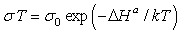 |
(1) |
where ΔHa is the enthalpy of electrical conductivity activation (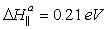). Similar results were obtained from the measurements of electrical conductivity along the c axis (Fig. 1b); in this case, the activation energy was 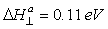. One has to note that such a character of electrical conductivity indicates dominance of ionic conductivity above the critical temperature. The observed stepwise variation in electrical conductivity in the TlGaTe2 crystals at a temperature of 305 K can be explained by the sharp change in a number of ions in the states where the ions are highly mobile.
The semiconductor TlGaTe2 crystals belong to the class of compounds of the group that crystallize in the tetragonal 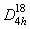space group. A characteristic feature of the TlGaTe2 crystals is that they represent Ga-Te chains extended along the tetragonal c axis of the crystal. Monovalent Tl+ atoms are in the octahedral surrounding of Te atoms. From electrochemical considerations, one may suggest that the structure of TlGaTe2 favours mobility of Tl+ cations the most. Here the favourable factors are the presence of vast cavities connected with one another through common conductivity windows and the principle possibility of deficit of monovalent thallium atoms. This deficit can substantially enhance ionic conductivity (Fig. 2).
The growth of σ(T) with temperature is caused mainly by diffusion of Tl+ ions through vacancies in the thallium sublattice of the TlGaTe2 crystal. This change results from the phase transition accompanied with disordering (melting) of the Tl sublattice of the TlGaTe2 crystal. Such a pattern of conductivity is typical of superionic conductors (Parfen'eva et al., 2003; Gurevich, 1982).
As it is known (Lidyard, 1957; Parfen'eva et al., 2004), in superionic conductors with increasing temperature, in addition to exponential growth of electrical conductivity, the exponential growth of permittivity ε is observed, which can attain rather large values at high temperatures.
Let us consider the obtained temperature dependences of permittivity measured in two experimental geometries, ε||(T) (Fig. 3a) and ε⊥(T) (Fig. 3b). In both directions, the exponential growth of the temperature dependence of permittivity is observed,
|
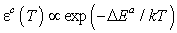 |
(2) |
Such a behaviour of ε(T) is apparently related to the fact that the ionic conductivity is accomplished most easily in the imperfect Tl+ sublattice in TlGaTe2, i.e., along the both crystallographic directions, along the tetragonal c axis and perpendicular to it. Based on the above shown crystallochemical analysis we can claim that in TlGaTe2 crystal, such charges can be Tl+ cations. Relaxors in TlGaTe2 crystals during the transition to the superionic state can be Tl+ dipoles of the chains that arise due to melting of the thallium sublattice and hops of Tl+ ions from one localized state to another.
The theory of the electric-field-induced phase transition to the state of superionic conductivity (Kharkats, 1981) is based on the concepts of a substantial role of the interaction between Frenkel defects in a crystal and of the effect of an electric field on the energy of defect formation. Thus, the above analysis shows that, applying an electric field with a certain critical value to TlGaTe2 crystal, one can obtain stepwise disordering of the cation sublattice leading to an increase in concentration of the interstitial cations over the entire crystal volume. Our investigations of the TlGaTe2 compound allow us to conclude that the high-conductivity state of the crystal can be obtained by electric-field-induced "melting" of the cation Tl+ sublattice without heating the crystal.
The behaviour of the system implies that the state of superionic conductivity is attainable in crystals that cannot be transferred to the high-conductivity state only by heating. In study (Kharkats, 1981) a relatively simple model of the distribution of cations over the interstices and the simplest law of the interaction of Frenkel defects in the system were used. The considered model of electric field induced stepwise disordering of the crystal sublattice allows also generalizations that take into account reconstruction of the rigid sublattice of a crystal occurring simultaneously with disordering.
The results of the measurements of electrical conductivity of the TlGaTe2 crystals in relation to electric field strength E at different temperatures both along the tetragonal c axis and perpendicular to it are presented in Figs. 4a and 4b.
At relatively low fields, conductivity σ is nearly independent of the field, because in this range of the field strength, conductivity is determined by the electron component. As can be seen from Figs. 4a and 4b (E = 181 V/cm), stepwise change in conductivity is observed at the temperatures T = 267 K (along the tetragonal c axis) and T = 242 K (perpendicular to this axis). Upon the transition to the superionic state, conductivity of the TlGaTe2 crystal increases by a factor of 1500. Within our experiments the currents were measured up to 104 А (Е7-20 measures in area 10 mcOhms - 1 GOhms - conductance); the measurement of the currents above 104 А was very difficult. The dashed sections of the graphs in Fig 4 a and b are extrapolations.
2.2. Terahertz time-domain spectroscopy
Terahertz spectroscopy is a powerful technique for material studies over a wide range of frequency which extends from a few tens of gigahertz to a few terahertz. Using ultra short electromagnetic pulses, terahertz spectroscopy gives access to the complex refractive index of a wide variety of materials. For parameters extraction, the temporal profiles of the terahertz pulses are recorded twice, the first time without the sample to be characterized, and the second time with the sample. The recorded profiles correspond to the temporal dependence of the electric field associated with the terahertz pulses. Then, the ratio of their Fourier transforms gives the complex transmission coefficient of the sample as function of frequency. This system has been described in more detail elsewhere (Duvillaret et al., 1996): a femtosecond Ti:Sa laser delivers optical pulses whose central wavelength is 800 nm at a repetition rate of 82 MHz.
Investigations in the far infrared region could give additional information on the physics of these nanofibrous crystals. We observed several absorption peaks in the THz transmission spectrum of TlGaTe2 (Fig. 5).
 . For the sake of legibility, this curve has been multiplied by 100; dashed curve, ETHz perpendicular to the nanofibers.
. For the sake of legibility, this curve has been multiplied by 100; dashed curve, ETHz perpendicular to the nanofibers.Most of them could be attributed to the excitation of phonons (A2u and Bu) (Panich and Sardarly, 2010; Gasanly et al., 1980). The absorption line at approximately 0.2 THz, seen only when the THz field is aligned along the nanofibers, occurs at a frequency lower than the lowest phonon one (A2u). Therefore, this frequency is probably related to the libration oscillation of the nanofibers.
The infrared (ТHz) spectra of γ - irradiated samples were not measured within the reported studies, since in our opinion, γ - radiation will not render essential influence on a vibration spectrum; while the irradiation-induced defects, essentially influence on the conductivity and dielectric permeability. However we are planning to investigate the influence γ - irradiation on vibration spectra of this type of crystals.
2. 3. Effects induced by γ-irradiation
After preliminary measurements of the values of σ||(T) and σ⊥(T), the samples were subjected to irradiation with γ-ray photons from a standard Co60 source. The radiation dose was increased gradually for each of studied samples by sequential exposures to the γray radiation to the dose as high as 250 Mrad.
The crystalline properties after the irradiation were not investigated, since the doses in order of 250 Mrad are not sufficient for changing the crystal structure. However this range of radiation doses may the defects, which are capable to change a power spectrum of a crystal, to have an influence on the character of the electrical conductivity and many other physical properties. Within the reported project we have studied the influence of -irradiation only on the temperature dependence of the electrical conductivity.
Conductivity of samples was measured in 4 hour after they were radiated. It is worth noting that the values of σ||(T) and σ⊥(T) were measured after each exposure to radiation. The measurement geometry described above, was used for the conductivity γ-irradiated samples as well. The conductivity was measured in the temperature range 90 – 300 K. Temperature dependences of electrical conductivity σ||(T) and σ(T) of initial TlGaTe2 samples (curves 1) and the samples subjected to γ-ray irradiation (curves 2–5) are shown in Figs. 6 and 7.
Experimental results show that, as a result of irradiation with γ-ray photons, impurity energy levels caused by radiation defects appear in the band gap. Thermal occupation of these levels occurs at a temperature lower than that of unirradiated crystal; i.e., the temperature range of existence of thermally activated conductivity is widened. It is also characteristic of this temperature range that, in this range, temperature related occupation of the trap centres occurs; as a result, localized charged impurities become neutral. As the radiation dose is increased to 100 Mrad, the conductivity decreases and remains constant in the dose range 100–200 Mrad; further increase in the radiation dose brings about an increase in the conductivity (curve 4 in Fig. 6 and curve 5 in Fig. 7). Charged defects appearing as a result of irradiation with γ-ray photons play the dominant role in these processes. Such a type of conductivity can be accounted for if we take into account that the doses higher than 150–200 Mrad for these crystals apparently represent only slight ionizing radiation and act as an activating factor for such processes as migration of defects caused by interchain disorder and transition of metastable states to stable states; i.e., radiationstimulated healing of structural defects is observed and leads to an increase in electrical conductivity of the crystal.
Based on the experimental results, we calculated values of the density of localized states, the activation energy, hop lengths, differences between the energy states near the Fermi level, and concentrations of deep traps at various doses of radiation; the Mott approximation was used in calculations (Sardarly, 2010). A sharp increase in the hop lengths for charge carriers is observed only in the case of measurements perpendicular to the chains (σ⊥); after irradiation with a dose of 150 Mrad, the hop length was 112 Å. At this dose and at this geometry of the experiment, calculations show that the concentration of the density of localized states is at a minimum (2.97 × 1018 eV–1 cm–3). Thus, at doses no higher than 150 Mrad for σ⊥, we observe healing of the defects caused by chain-related 1D disorder (i.e., radiation annealing leading to translational ordering of the Ga–Te2–Ga–Te2 chains occurs); at higher doses of radiation, specifically radiation (point) defects emerge.
For the region of an abrupt increase in current in the I-V characteristic of a TlGaTe2 crystal, Fig. 8 shows calculated dependences of electrical conductivity on electric field at temperatures 90 and 300 K.
According to Pool and Frenkel (Frenkel, 1975), exponential increase in the field dependence of conductivity can be represented as
|
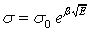 |
(3) |
where β is the Frenkel coefficient,
|
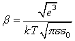 |
(4) |
ε is the relative permittivity of the crystal, and k is the Boltzmann constant.
We used the slope of these straight lines to determine the values of β the temperature dependence of which illustrates the linearity of the dependences β ∝ 103/T and extrapolation of the latter dependences, which converges to the origin of coordinates (Fig. 9). It is known that the value of the electric field corresponding to the onset of nonlinear dependence σ(E) provides information on the concentration of defects responsible for thermofield ionization and conductivity in crystals (Hill, 1971). Taking into account the expression,
|
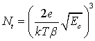 |
(5) |
and knowing the values of the lowest electric field Ec at which the nonlinear dependence of σ on E1/2 sets in, we can estimate the concentration of ionized centres Nf in TlGaTe2.
It is of importance to determine the shape of the potential well since, once this shape is known, one can
determine the spatial distribution of the charge (ρ) in the vicinity of the centre (taking into account the Poisson equation). The function φ(x) represents the potential energy dependent on the distance to an impurity centre or a trap (x is the distance along the direction of the applied field) and varies under the effect of an electric field (Hanias, 1993).
It follows from the results published in (Hill, 1971 and Volkov, 1972) that
|
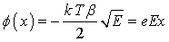 |
(6) |
|
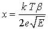 |
(7) |
We used these formulae and experimental data to determine the shapes of potential wells in TlGaTe2 (Fig. 10); this made it possible to estimate the parameters of the centres capturing the charge carriers. Indeed, for an electron to leave the centre, the condition εe > U – ΔU (Volkov 1972) should be satisfied; here, εe is the energy of an electron, U is the depth of the level at which the electron is localized, and ΔU is the value of lowering of the potential barrier. It is necessary that an electron retain its energy until the moment it passes the saddle point and not lose its energy in thermal collisions. This takes place only in the cases in which the free path length of an electron exceeds the effective size of the potential well. In this situation, the free path length of charge carriers is defined by the following formula (Volkov 1972 and Niftiev, 2003):
|
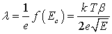 |
(8) |
In Table 1, we list the calculated values of the concentration of ionized centres Nf and free path lengths λ of charge carriers; the calculations were performed in the context of the Pool–Frenkel approximation (Frenkel, 1975). As can be seen from Table 1, irradiation of samples leads to pronounced anisotropy of the parameters. The anisotropy of the free-path lengths λ of charge carriers is 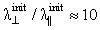before irradiation and is 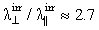after irradiation with a dose of 250 Mrad. The irradiation-induced increase of the free-path lengths parallel and perpendicular to the chains is 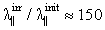and 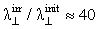respectively. The corresponding ratios for concentrations of ionized centres are equal to 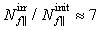 and 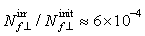, respectively.
Table 1. Concentration of ionized centres and free path lengths calculated using the Pool–Frenkel approximation
| Direction of Conductivity | σ, cm | Nf, cm-3 |
| σ||, initial sample | 10.4 x 10-7 | 13.7 x 1016 |
| σ^, initial sample | 9.8 x 10-6 | 1.8 x 1013 |
| σ||, irradiated with the dose 250 Mrad | 1.6 x 10-4 | 9.3 x 1017 |
| σ^, irradiated with the dose 250 Mrad | 4.3 x 10-4 | 1.1 x 1010 |
Thus, we may state that irradiation with a dose of 250 Mrad brings about some ordering of nanochains (nanoneedles) and, as a consequence, an increase in the free-path length of charge carriers is observed in the nonlinear region of the I-V characteristic. It is noteworthy that the shape of potential wells is not changed. Previously it was shown that the length of hops of the charge carriers in the initial ear region of the I-V characteristic, as calculated in the Mott approximation for the samples irradiated with a dose of 250 Mrad, is practically not varied as compared with unirradiated samples (Sardarly, 2010).
In the presented work the influence of γ-irradiation on the electrical conductivity has been studied at the temperatures, which are below the temperature region, where the superionic condition was observed. The study of the influence of γ-irradiations on a superionic condition will be a goal of our future investigations.
3. Conclusion
The results obtained show that, at temperatures below 300 K, the electron component of conductivity is dominant (Sardarly, 2010) With further increase in temperature (above 300 K), stepwise growth of conductivity is observed, which is attributed to the growth of the ionic component caused by disordering in the Tl+ cation sublattice. In the mentioned temperature range, ionic conductivity already starts prevailing over electron one. Experimental investigations of electrical conductivity of the TlGaTe2 crystals as a function of the strength of the applied electric field points out that, at a certain value of the critical electric field (E =181 V/cm), stepwise disordering of the Tl+ ionic sublattice accompanied by stepwise variation in the conductivity may occur.
The superionic behaviour of the conductivity is clearly observed over the phase transition temperature. Moreover, our original records of the THz transmission spectra of TlGaTe2 reveal features that may be attributed to the librations of the nanofibers. This explanation merits definitive proofs, for which we are presently performing additional works.
It is noteworthy that the described effect of the field-induced stepwise disordering makes it possible to implement the superionic state of the TlGaTe2 crystal under fairly convenient conditions, which opens interesting opportunities for its application as varistors. The detailed analysis of varistor effect in semiconductors is given in (Pavlov, 1997).
For TlGaTe2 crystals, we calculated the values of the density of localized states, the activation energy, the hop lengths, the difference between the energy states in the vicinity of the Fermi level, and the concentrations of deep traps at various doses of γ-ray irradiation. It is established that irradiation with a dose as high as 250 Mrad affects only slightly the parameters that characterize the hopping type of conductivity in the linear portion of the I-V characteristic. The analysis of the dependence σ ∝ E½ with the thermofield Pool–Frenkel effect taken into account shows that the current in the nonlinear portion is caused by a small-magnitude field effect in the course of measurements in the case of both parallel and perpendicular directions with respect to the tetragonal crystallographic axis of TlGaTe2. We also determined the values of the concentration of ionized centres, the free-path length λ, and the shape of the potential well in unirradiated TlGaTe2 crystals and the crystals irradiated with a dose of 250 Mrad.
As it was stated above, the irradiation with a dose of 250 Mrad brings about some ordering of nanochains (nanoneedles) and, as a consequence, an increase in the free-path length of charge carriers is observed in the nonlinear region of the I-V characteristic. In our opinion, the possibility of re-ordering the nanochains in TlGaTe2 crystals under the γ-ray irradiation opens new prospective for designing the nano-size varistors with controlled parameters.
Acknowledgements
The authors gratefully acknowledge the financial support of Science Development Foundation under the President of the Republic of Azerbaijan trough Grant № EIF-2011-1(3)-82/13/1.
References
Aldzhanov, M. A., Mamedov, K. K., Abdurragimov, A. A. (1985). Heat Capacity and Moments of the Phonon Spectrum in TlGaTe2, Phys. Stat. Solidi (b), 131, K35–K37. View Article
Aliev, V. A., Aldzhanov, M. A., Aliev, S. N. (1987). Incommensurate phase transition in TlGaTe2, JEPT Letters, 45, 534-536. View Article
Duvillaret, L., Garet, F. and Coutaz, J.-L. (1996). A reliable method for extraction of material parameters in terahertz time-domain spectroscopy, IEEE Journal of Seleceted Topics in Quantum Electron., 2, 739-746. View Article
Gasanly, N. M., Goncharov, A. F., Dzhavadov, B. M., Melnik, N. N., Tagirov, V. I., Vinogradov, E. A. (1980). Vibrational Spectra of TlGaTe2, TlInTe2, and TlInSe2 Layer Single Crystals, Physica Status Solidi B 97, 367-377. View Article
Godzhaev, É. M., Orudzhev, G. S., Kafarova D. M. (2004). Band structure and permittivity of the TlGaTe2 compound, Physics of Solid State, 46, 833-835. View Article
Gurevich, Yu. Ya., Kharkats Yu. I. (1982). Features of the thermodynamics of superionic conductors, Soviet Physics Uspekhi 25, 257-276. View Article
Guseinov, G. D., Abdullayev, G. B., Bidzinova, S. M., Seidov, F. M., Ismailov, M. Z., Pashayev, A. M. (1970). On new analogs of TlSe-type semiconductor compounds, Physics Letters A, 33, 421-422. View Article
Guseynov, G. D., Ramazanzade, E. M., Kerimova, E. M., Ismailov, M. Z. (1967). About a Group of Three-Component Compounds being Analogous to Binary Semiconductors of the AIII BVI Type, Physica Status Solidi (b), 22, K117-K122. View Article
Hanias, M. P., Anagnostopoulos, A. N. (1993). Negative-differential-resistance effects in the TlGaTe2 ternary semiconductor, Physical Review B 47, 4261–4267. View Article
Hill, R. H. (1971). Poole-Frenkel conduction in amorphous solids, Philosophical Magazine, 23, 59-86. View Article
Kharkats, Yu.I. (1981). Fast ion transport in solids induced by an electric field, Solid State Ionics, 2, 301-308. View Article
Mott, N. F. and Davis, E. A. (1979). Electronic Processes in Non-Crystalline Materials, Clarendon, Oxford, p. 604. -- BOOK
Niftiev,N. N., Alidzhanov, M. A., Tagiev,O. B., Muradov, M. B. (2003). Electrical properties of FeIn2Se4 single crystals, Semiconductors, 37, 165-167. View Article
Parfen'eva, L. S., Shelykh, A. I., Smirnov, I. A., Prokof'ev, A. V., Assmus, W. (2004). Electrical conductivity and permittivity of the one-dimensional superionic conductor LiCuVO4, Physics of Solid State, 46, 1027-1029. View Article
Parfen'eva, L. S., Shelykh, A. I., Smirnov, A. I., Prokof'ev, A. V., Assmus, V., Misiorek, Kh., Mukha, Ya., Jezhovski, A., Vasil'eva, I. G. (2003). Heat Transport over Nonmagnetic Lithium Chains in LiCuVO4, a New One-Dimensional Superionic Conductor, Physics of Solid State, 45, 2093-2098. View Article
Pavlov, A. N., Raevskii, I. P. (1997) Varistor effect in semiconductor ferroelectrics, Technical Physics 42, 1390-1394. View Article
Sardarly, R. M., Samedov, O.A., Abdullayeva, A.P., Huseynov, E. K., Salmanova, F. T., Safarova, G. R. (2010). Specific Features of Conductivity of γ-Irradiated TlGaTe2 Crystals with Nanochain Structure, 44, Semiconductors, 1-5. View Article
Website References
The Ministry of Industry Republiv of Belarus, consulted September 12, 2012 View Website